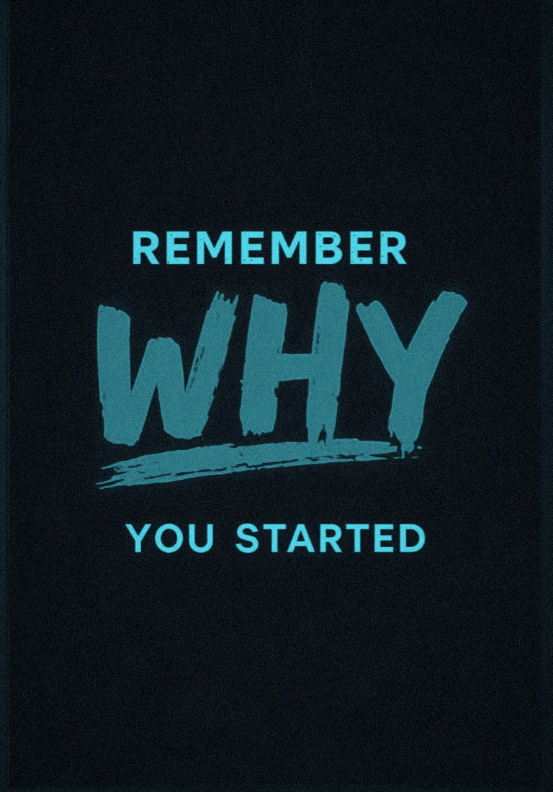
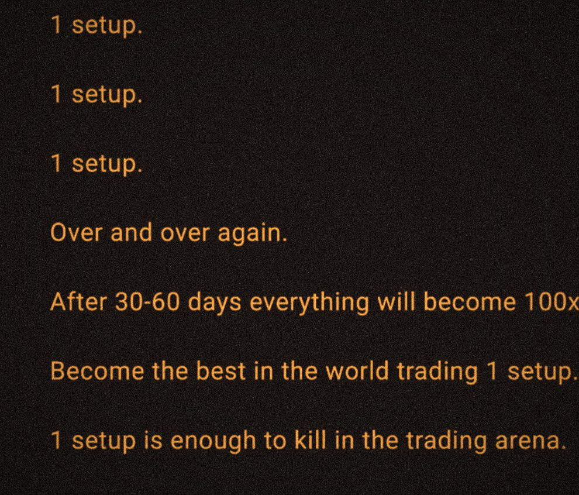
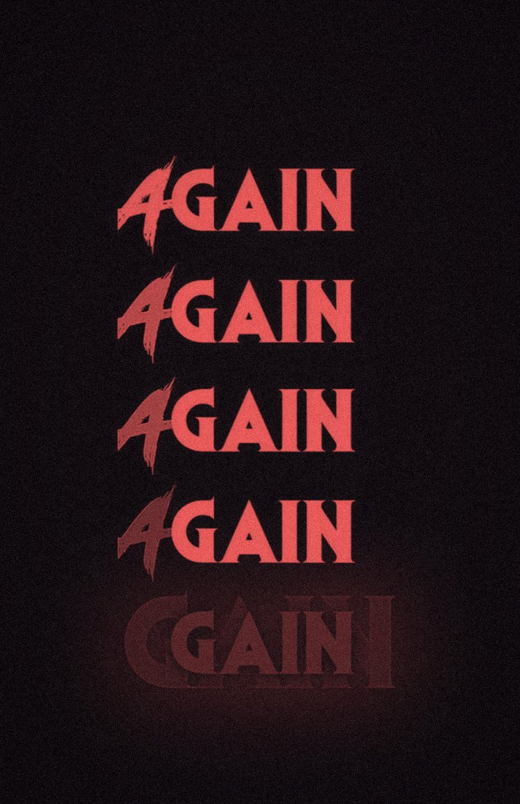
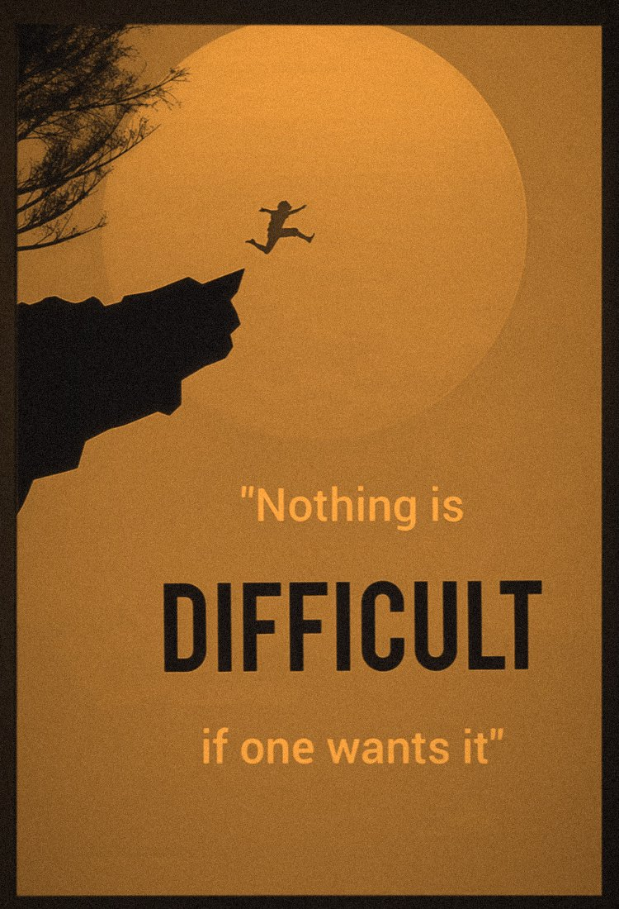
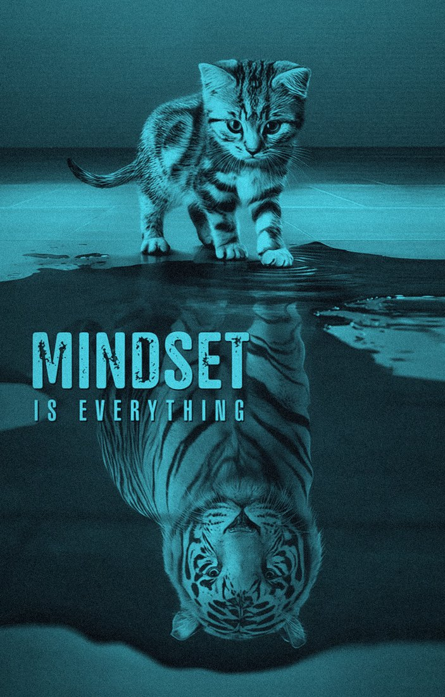
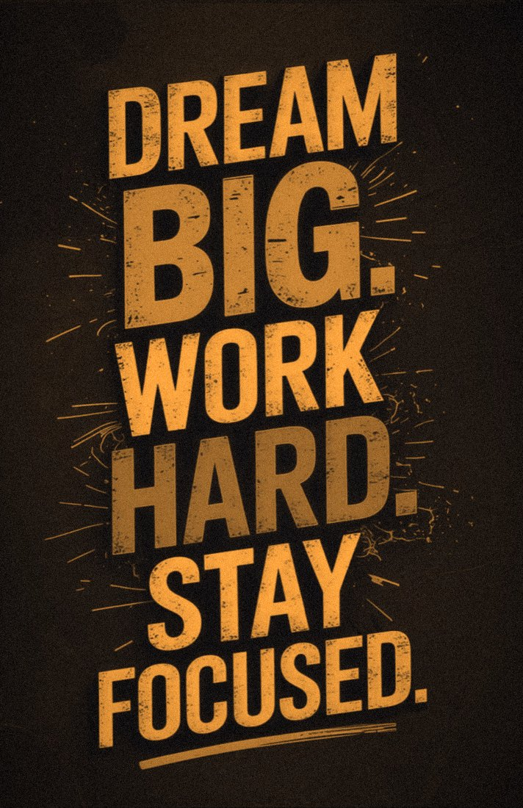
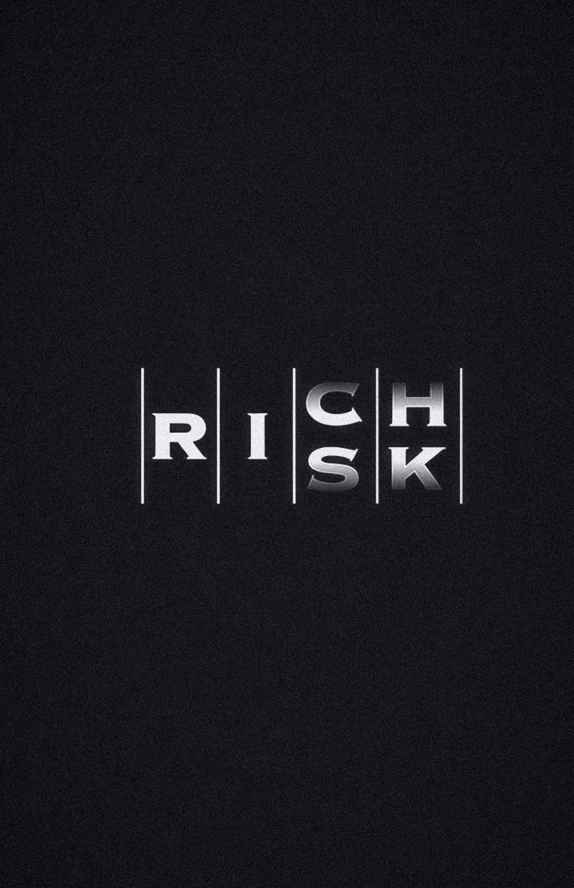
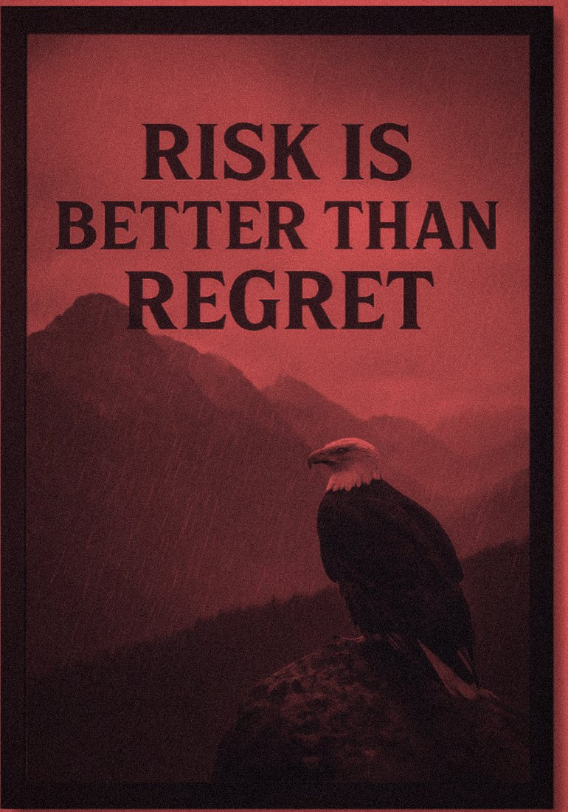
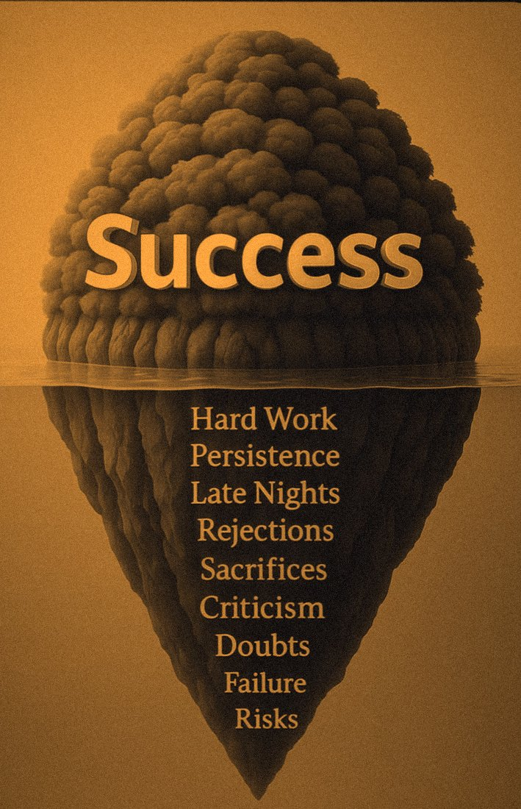

01 / 09Not written for the good days.
This is the one I actually look at after two losses in a row — right before the rule says the terminal closes anyway, and before the reason for any of this gets hard to remember at 11am on a red day.

02 / 09One setup, repeated.
Three questions, one chart, nothing clever — it's the whole page next door, just written out longer and posted somewhere I'd see it every morning. The boring part is the part that works.
1 setup. 1 setup. 1 setup. Over and over again.
After 30–60 days everything will become 100x easy.
Become the best in the world trading 1 setup.
1 setup is enough to kill in the trading arena.

03 / 09Same setup, again.
The 9 EMA doesn't know it's the fourth identical, uneventful morning this week. Neither should I. It's usually the fifth one — the one that looks exactly like the other four — that pays for all of them.

04 / 09Wanting it isn't the hard part.
Wanting it at 9:14, checklist still half-open, yesterday's loss still sitting uncomfortably in the account — that's the part that's actually difficult. The poster is easy to agree with. 9:14 is not.

05 / 09Same chart, same rules.
Some mornings I still trade the setup small and scared, size cut in half for no reason the plan would recognize. The chart never changes — only which one of us shows up to read it.

06 / 09The number stays outside market hours.
Whatever the dream is, it's not something I look at between 9:15 and 3:10. In that window there are exactly three questions, asked in order, and nothing else gets a vote.

07 / 09Read it either way, it's still true.
The word doesn't move. What changes is only whether it was sized, and the stop placed, before the candle closed — or scrambled together after.

08 / 09Not a reason to skip the stop.
A reason not to skip the setup just because it feels uncomfortable to click buy. The stop stays exactly where it was always going to be — this one is only about the trades I'd otherwise talk myself out of.

09 / 09What anyone else sees is a green cell.
One line in a spreadsheet. Everything holding that line up — the losses, the rules rewritten after a bad month, the evenings spent journaling trades I'd rather forget — is dated, timestamped, and sitting on the other page.